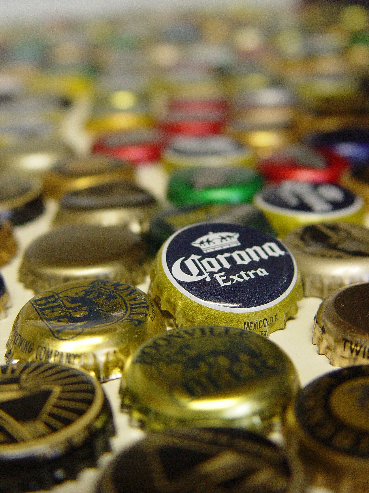

The Old Shelf / India / Bottle caps
Crown caps
India
Bottle caps
not dated
Sits in the open first-look slot because no tape-ball photograph was found. These are crown caps, not a claim that this pile was played in a particular gully.
Stills only.

A photograph of crown caps. The file says crown caps and does not name a country or show them being flicked. Used as the bottle-cap object, not as proof of a particular game.
Eric Marttinen. CC BY 2.0. Source page